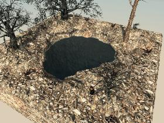

mp_waste_sewer_hole_1

XML
| CopyAirBlocks | True |
|---|
| AllowTopSoilDecorations | False |
|---|
| YOffset | -10 |
|---|
| AllowedBiomes | wasteland |
|---|
| Zoning | Commercial |
|---|
| AllowedTownships | city |
|---|
| ExcludeDistantPOIMesh | False |
|---|
| TraderArea | False |
|---|
| DistantPOIYOffset | 0 |
|---|
| EditorGroups | world/deco/biome |
|---|
| DifficultyTier | 1 |
|---|
| ExcludePOICulling | False |
|---|
Blocks
- terrDestroyedStone (Destroyed Stone)
- air (Air)
- cntTrashPile08 (Foul Trash)
- cinderBlocks03 (Cinder Blocks03)
- scrapMetalPile (Scrap Metal Pile)
- cinderBlocks02 (Cinder Blocks02)
- terrWaterPOI (Water Block (POI))
- cntGunSafe (Gun Safe)
- cntTrashPile04 (Abandoned Rubbish)
- treeMediumRandomHelper (= Tree Medium = Random Helper)
- treeSmallRandomHelper (= Tree Small = Random Helper)
- cinderBlocks01 (Cinder Blocks01)
- treeLargeRandomHelper (= Tree Large = Random Helper)